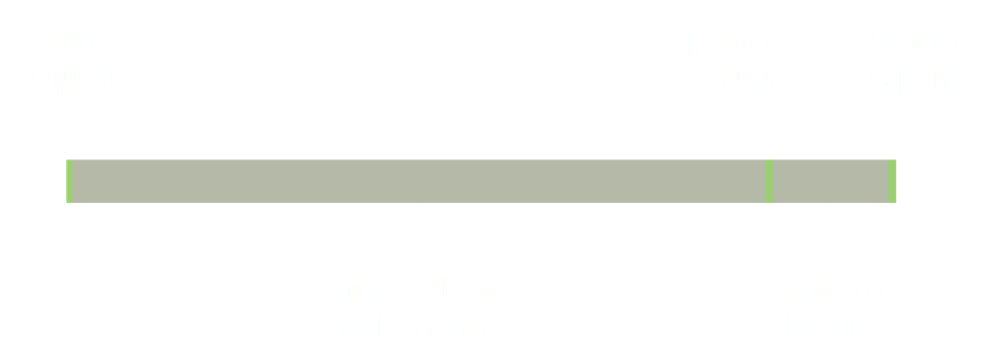

A presentation of Julian Gimbel and Robert Pinsler
Agenda
- Node.js in a nutshell
- Characteristics
- Usage szenarios
- npm and modules
- Summary and outlook
- JavaScript has place 9 in the TIOBE list of popular programming languages
- Born for the manipulation of DOM elements in Netscape 1995
- Server side JavaScript(SSJS) introduced soon after in Netscape Livewire
Why Server side JavaScript?
- Share Code between Server and Browser:
- Simple case: Data validation in forms
- Keep thinking in one language through entire stack
- Lack of acceptance as programming language until mid 2000s
- node.js with new concept and biggest and fastest growing community acceptance
- Alternatives for JavaScript like Dart or Coffescript in Browsers
- Alternatives for node.js like xsjs for SAP Hana as SSJS
Node.js
- published 2009 by Ryan Dahl
- build on stable architecture like V8 of Chrome
- Translates JavaScript to byte code => ~performance of C++
- Platform independent (available for Mac, Windows, Linux)
Hello World
var http = require('http');
http.createServer(function (req, res) {
res.writeHead(200, {'Content-Type': 'text/plain'});
res.end('Hello World\n');
}).listen(1337, '127.0.0.1');
console.log('Server running at http://127.0.0.1:1337/');
Put this into helloworld.js and run
node helloworld.js
To make this presentation run / Create a http Server
- Download node.js
- npm install http-server -g
- cd to/presentation/folder
- http-server
- Open localhost:8080
Performance challenges
of modern web applications- solve C10K problem
- provide native-like performance
- show real-time reactivity
What's the bottleneck?

"Please wait..."
Multiple threads
- complex manual synchronisation
- expensive context switching
- high memory consumption
The Node.js way

single thread + asynchronous, non-blocking I/O
Event loop

Companies using Node.js


Usage szenarios
When to use- lots of concurrent requests with few CPU cycles
- JSON-based REST services
- push-based data connections
- streaming
- CPU-intense tasks
- few interaction with external resources
- classical CRUD operations
Total Packages: 72 825
12 228 124 downloads in the last day
npm install
npm adduser, npm publish
Very simple and comfortable debugging with chrome tools:
npm install -g node-inspector
node-debug test.js